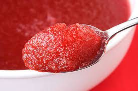

Applesauce Jello

Applesauce Jello is a lesser-known biproduct from the Jello craze of the 1970.
It combines applesauce with typically red jello into a textured, slimey dessert.
Ingredients
- 3 oz red gelatin
- 1 cup boiling water
- 1 1/2 cup cooled applesauce
Steps
- Pour gelatin into boiling water in a big bowl.
- Add Applesauce.
- Stir until properly mixed.
- Pour into a large dish and cover with a lid.
- Refridgerate until set.